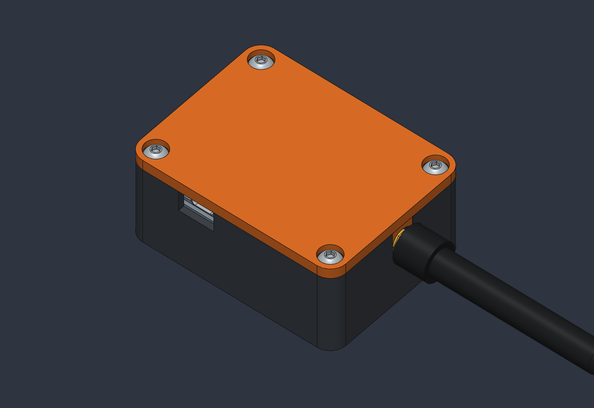
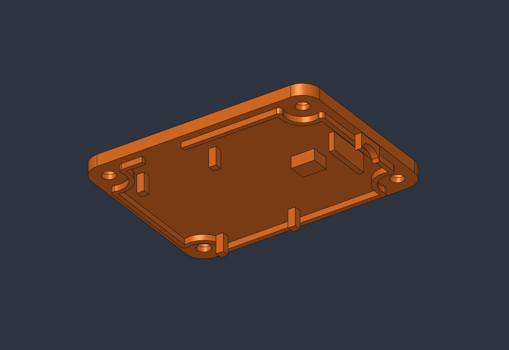
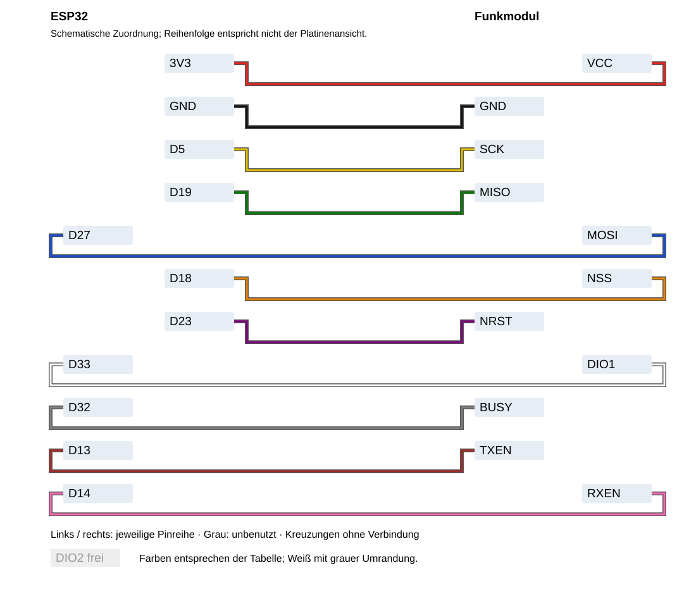
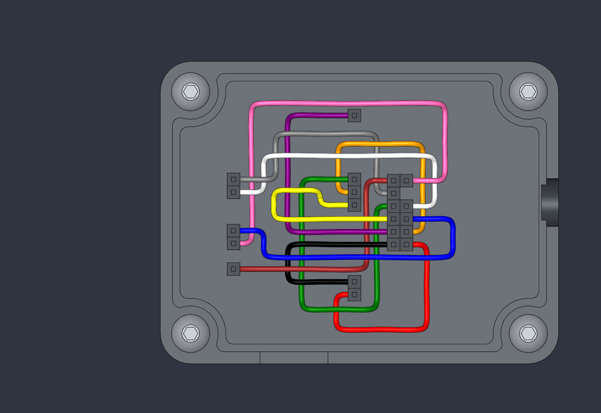
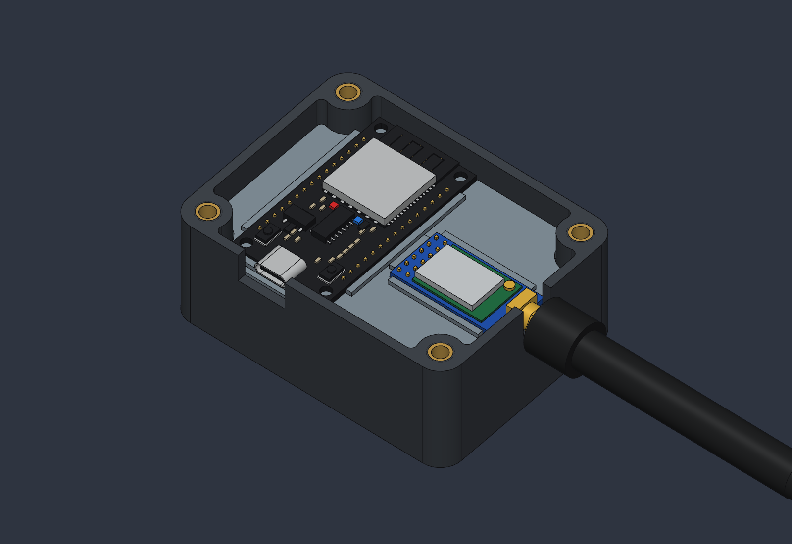
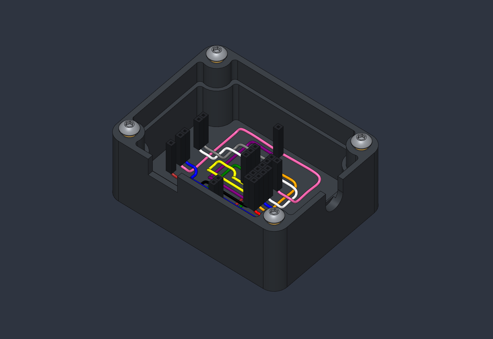

Gehäuse, Verdrahtung und Montage · Version 2

Ein kleines Funkgerät für Meshtastic. Ein ESP32 steuert das Funkmodul. Strom kommt über USB-C; ein Akku ist nicht vorgesehen. Das Handy verbindet sich per USB oder Bluetooth.
Gehäuse: 79 × 60 × 34,5 mm, ohne Antenne. TPU, drei Druckteile. Nicht wasserdicht.
| Anzahl | Teil und Größe | Bezugsquelle |
|---|---|---|
| 1 je | Unterteil stl/base.stl, 79 × 60 × 30,5 mm; Montageplatte stl/plate.stl, 73,6 × 54,6 × 3,6 mm; Deckel stl/lid.stl, 79 × 60 × 10,2 mm | Selbst drucken |
| 1 | ESP32 DevKit V1, 30 Pins, USB-C, Platine 51 × 28 mm, Pins nach unten | Elektronikhandel |
| 1 | DX-PJ27-V1.2 mit DX-LR30-900M22S (SX1262), Platine 31 × 16 mm | Elektronikhandel |
| 1 | SMA-Stabantenne, passend zum Funkband; Annahme: Länge ca. 78 mm | Funkhandel |
| 4 je | M4 × 10 Linsenkopfschrauben (ISO 7380) und M4-Wärmeeinsätze, 8,1 mm lang, Außen-Ø ca. 6,3 mm (z. B. CNC Kitchen Standard M4) | Schrauben- / 3D-Druckhandel |
| 11 | Dupont-Kabel Buchse–Buchse, 28 AWG, Ø ca. 1,1 mm; Längen siehe Tabelle | Elektronikhandel |
Außerdem: USB-C-Kabel und Stromquelle, Lötkolben mit Temperaturregelung, Innensechskantschlüssel und Multimeter mit Durchgangsprüfung.
Bambu Lab P1S, 0,8-mm-Düse; Projekt orca/meshtastic-node.3mf. Bambu TPU for AMS (68D), Profil „0.24mm Standard @BBL X1C 0.8 nozzle“ und Filamentprofil „Bambu TPU for AMS“ (orca/profiles/tpu-ams-08.json). Textured PEI bei 35 °C, 3 Wände, 20 % Füllung, keine Stützen. Drei Teile auf einer Platte: ca. 1 h 20 min und 74 g (Orca-Schätzung).
Bambu empfiehlt Kleber auf der Druckplatte und Trocknen bei 70 °C für 8 Stunden: Bambu Lab, TPU for AMS.
Unterteil offen nach oben; Platte mit Taschen nach oben; Deckel mit Außenseite nach unten. Die Deckel-STL ist bereits gedreht.
Vier Eckpfosten mit Ø5,6-mm-Löchern für die Einsätze sind mit den Wänden verbunden. Eine 1,5 mm breite Auflage 20,6 mm über dem Boden trägt die 2,4 mm dicke Platte mit 0,3 mm Spiel. 1,2 mm hohe Taschenränder halten die Platinen; Fenster lassen die Stecker durch. Kabel laufen darunter auf dem Boden.
Der 4 mm dicke Deckel hat einen 1,6 mm breiten, 2 mm hohen Rand mit 0,3 mm Spiel um die Eckpfosten und einer Lücke am USB-Stecker. Vier Finger halten den ESP32; zwei Niederhalter das Funkmodul. Sie drücken jeweils 0,3 mm auf die Platinen. Der TPU-Deckel federt und klemmt beide fest. Schraubenköpfe sitzen bündig in Ø8,2 × 2,3 mm Senkungen.

USB-C: 13,5 mm breite Öffnung vorne. SMA: Ø9,5 mm im rechten Seitenteil. Beide sind oben offen und werden vom Deckel geschlossen.
Die Pins sind nach Beschriftung dargestellt. Grau bleibt frei. Linien zeigen Verbindungen, nicht den tatsächlichen Kabelweg. Kreuzungen sind keine Verbindungen.

Beide Platinen haben ihre Steckstifte auf der Unterseite. Beschriftung vor dem Einstecken direkt auf den Platinen prüfen.
Länge in mm: modellierter Draht zwischen den Steckergehäusen / empfohlener Drahtzuschnitt. Zuschnitt = Modell + 10 mm, auf 5 mm aufgerundet; Steckergehäuse kommen dazu.
| Signal | Funkmodul | ESP32 | Farbe | Modell / Zuschnitt |
|---|---|---|---|---|
| Strom | VCC | 3V3 | Rot | 50.8 / 65 |
| Masse | GND | GND (neben 3V3) | Schwarz | 43.4 / 55 |
| SCK | SCK | D5 (GPIO 5) | Gelb | 49.8 / 60 |
| MISO | MISO | D19 (GPIO 19) | Grün | 76.3 / 90 |
| MOSI | MOSI | D27 (GPIO 27) | Blau | 67.0 / 80 |
| NSS | NSS | D18 (GPIO 18) | Orange | 51.6 / 65 |
| Reset | NRST | D23 (GPIO 23) | Violett | 59.1 / 70 |
| DIO1 | DIO1 | D33 (GPIO 33) | Weiß | 64.1 / 75 |
| Busy | BUSY | D32 (GPIO 32) | Grau | 54.1 / 65 |
| TX-Freigabe (ungeprüft) | TXEN | D13 (GPIO 13) | Braun | 51.2 / 65 |
| RX-Freigabe (reserviert, ungeprüft) | RXEN | D14 (GPIO 14) | Pink | 94.0 / 105 |
3V3 an VCC, niemals VIN an VCC. Pink ist reserviert; Braun ist ungeprüft. Ihre Nutzung hängt von der geprüften Funkumschaltung und Firmware ab.

Deckel, Platte und Platinen ausgeblendet. Annahme: Die Kabelwege sind idealisiert; echte Kabel können lockerer liegen.


Kabelweg unter der Platte; Platte und Platinen ausgeblendet.
USB abziehen. Multimeter auf Durchgang stellen: Ein Piepton zeigt eine elektrische Verbindung. Bei Unsicherheit Hilfe holen. Bei einer unerwarteten Verbindung Fehler suchen, nicht einschalten.
docs/wiring.md.